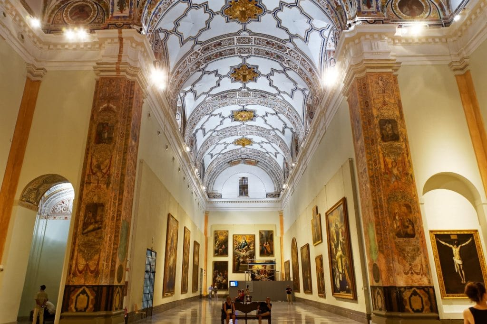
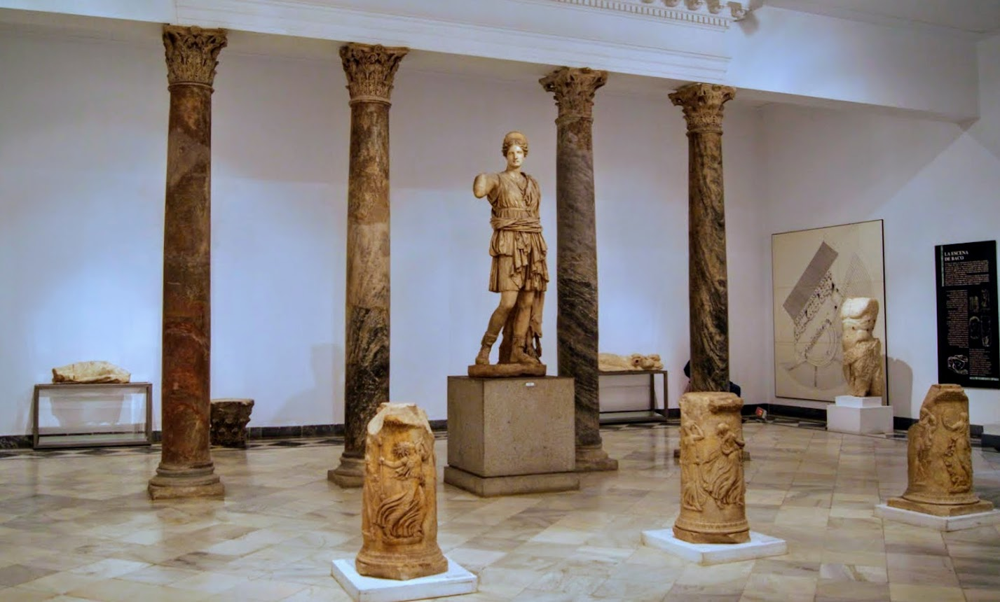
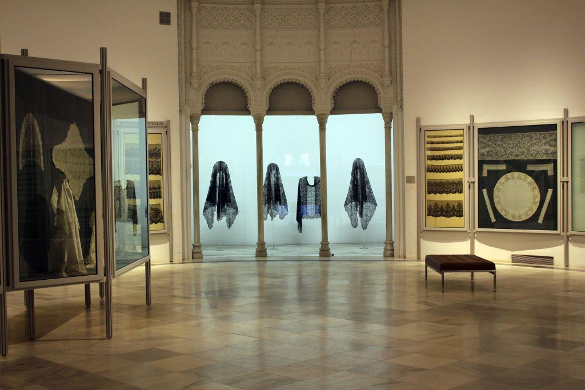

Museos

Museo de Bellas Artes de Sevilla
El Parque de María Luisa, inaugurado en 1914, es el jardín más famoso de Sevilla. Destaca por sus avenidas arboladas, estanques y monumentos, siendo la Plaza de España su icono. Es un oasis ideal para pasear, relajarse y disfrutar del patrimonio histórico y natural de la ciudad.

Museo Arqueológico de Sevilla
Situado en el Parque de María Luisa, este museo ofrece una amplia colección de artefactos desde la prehistoria hasta la época islámica. Destacan las estatuas romanas y los mosaicos de Itálica.

Museo de Artes y Costumbres Populares
Ubicado en el Pabellón Mudéjar de la Exposición Iberoamericana de 1929, este museo exhibe objetos que ilustran la vida cotidiana en Andalucía, incluyendo trajes tradicionales, herramientas agrícolas y utensilios domésticos.